Do generative image models truly understand lighting? We benchmark 16 models by asking them to inpaint light probes into real photographs, then measure how accurately the generated probes reproduce the ground-truth illumination in direction, colour, and radiance distribution.
16
Models evaluated
23,023
Ground-truth images
1,006
Indoor scenes
24
Lighting directions
Abstract
Accurate modelling of illumination is central to realistic image synthesis and scene understanding. Yet, there is little exploration into whether image generative models truly understand lighting in a physically accurate manner. This work proposes a benchmark to assess the lighting understanding and harmonisation capabilities of generative models. Our key insight is that evaluating lighting understanding only requires testing how well models insert novel objects into real photographs whilst maintaining consistent illumination. We use a multi-illumination dataset with images containing simple objects serving as “light probes”, and prompt models to inpaint the same object onto the original image, then compare the generated results against the ground-truth light probes. We estimate the lighting direction, colour and radiance distribution from the inpainted probes, providing a quantitative measure of illumination accuracy and photometric realism.
Results & Key Findings
Quantitative Evaluation
Click a finding to see the supporting figure with the relevant conclusion highlighted.
📅
No improvement over time
Despite rapid progress in image generation, lighting accuracy has not improved across model generations.
🔒
Closed ≠ better
Closed-source models do not outperform open-weight models. The best results come from open models.
⚖
No superior approach
Neither inpainting nor editing dominates. The two best models use different paradigms.
📏
Scale doesn't help
Doubling model parameters (4B→9B→32B) yields less than 1° improvement in angular error.
👁
Perceptually plausible
Most errors fall below human perceptual thresholds (<30°), making them visually undetectable.
☀
Front-lighting bias
Models systematically prefer frontal lighting, with error increasing for extreme azimuth and elevation.
🎨
Colour accuracy
Colour error (ΔE) is weakly correlated with directional error — models can get direction right but colour wrong.
📊
Radiance distribution
KL divergence of radiance distributions corroborates the light direction and colour results — the same models lead across all three measures.
🔍
Survivorship bias
Models with lower probe survival rates also have higher angular error — the bias works against weaker models.
📍
Spatial consistency
Models reproduce correct spatial lighting variation across positions — not just applying uniform illumination.
Distribution of angular error in estimated light direction. Models sorted by release date. Inpainting models in blue, editing models in orange; lighter shades indicate closed-source. Click a finding above to highlight a specific pattern.
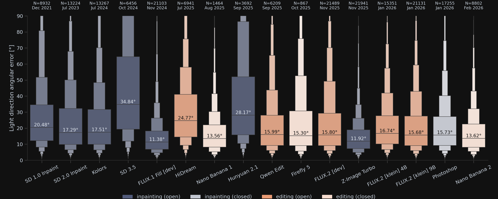
Lighting accuracy has stayed mostly constant with time. Models appear in publication order. Despite years of development and training on ever larger datasets, there is no clear downward trend in angular error. FLUX.1 Fill (Nov 2024) remains the most accurate, while later FLUX.2 variants are worse.
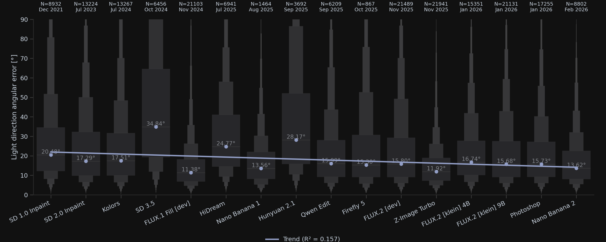
No improvement within model families. FLUX.1 Fill outperforms all later FLUX.2 variants (4B, 9B, [dev]), despite more parameters and later release dates. Similarly, Nano Banana 2 does not improve over Nano Banana 1.
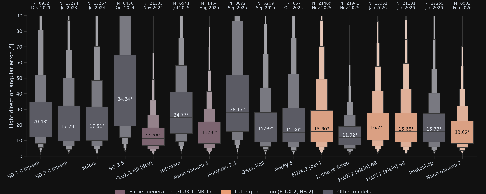
Closed-source models do not outperform open-weight models. The best closed models (Nano Banana 1 at 13.64°, Nano Banana 2 at 13.62°) are still slightly worse than the best open models (FLUX.1 Fill at 11.40°, Z-Image Turbo at 11.91°).
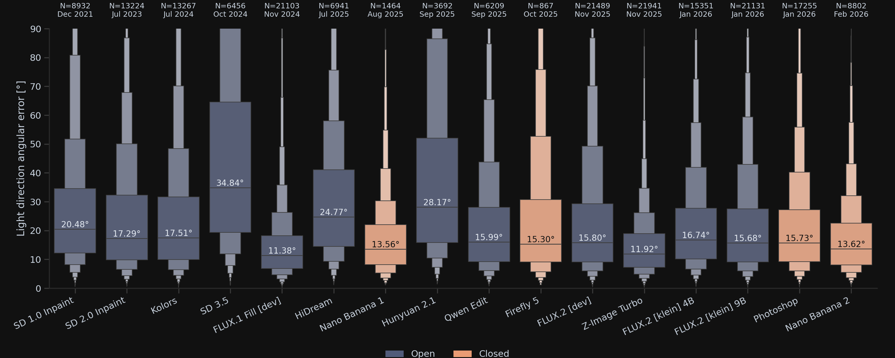
Neither inpainting nor editing is superior. The two best models use different approaches: FLUX.1 Fill (inpainting, 11.40°) and Z-Image Turbo (text-based editing, 11.91°).
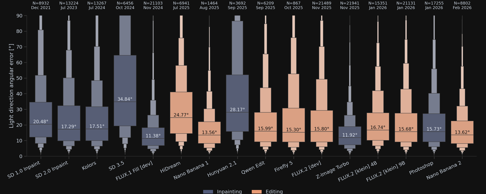
No correlation between parameter count and lighting accuracy. A regression through median angular error vs. number of parameters shows no significant relationship.
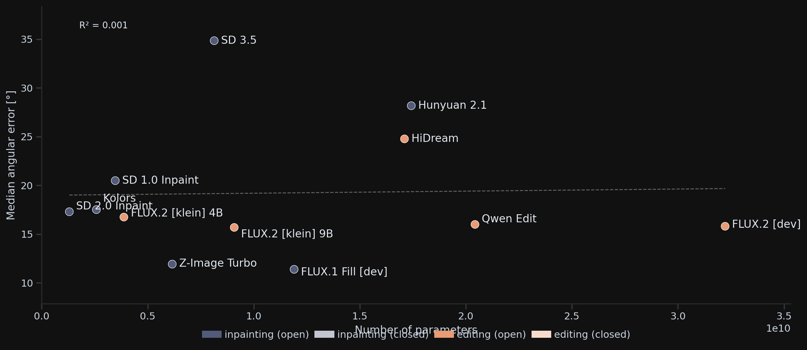
Within the FLUX family, scaling parameters yields diminishing returns. FLUX.2 [klein] 4B and 9B differ by only 0.92°. FLUX.2 [dev] with 32B parameters improves by just 0.45° more.
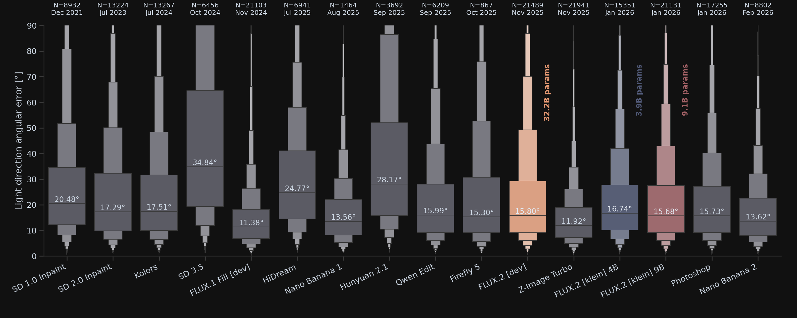
Most errors fall below human perceptual thresholds. Psychophysical studies suggest thresholds of ~30° for synthetic stimuli and 30–40° for real scenes. The majority of model medians fall well below these bounds.
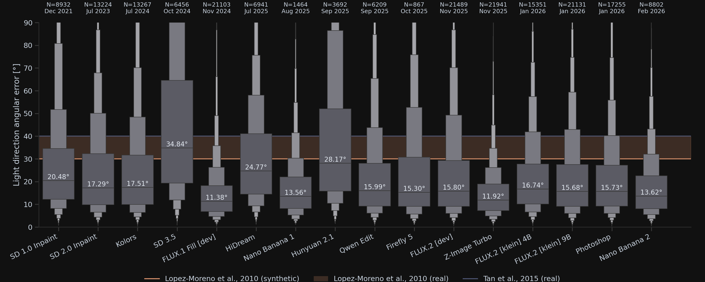
Models prefer frontal lighting directions. Angular error increases systematically as the ground-truth light direction deviates from centre in both azimuth and elevation.
Azimuth
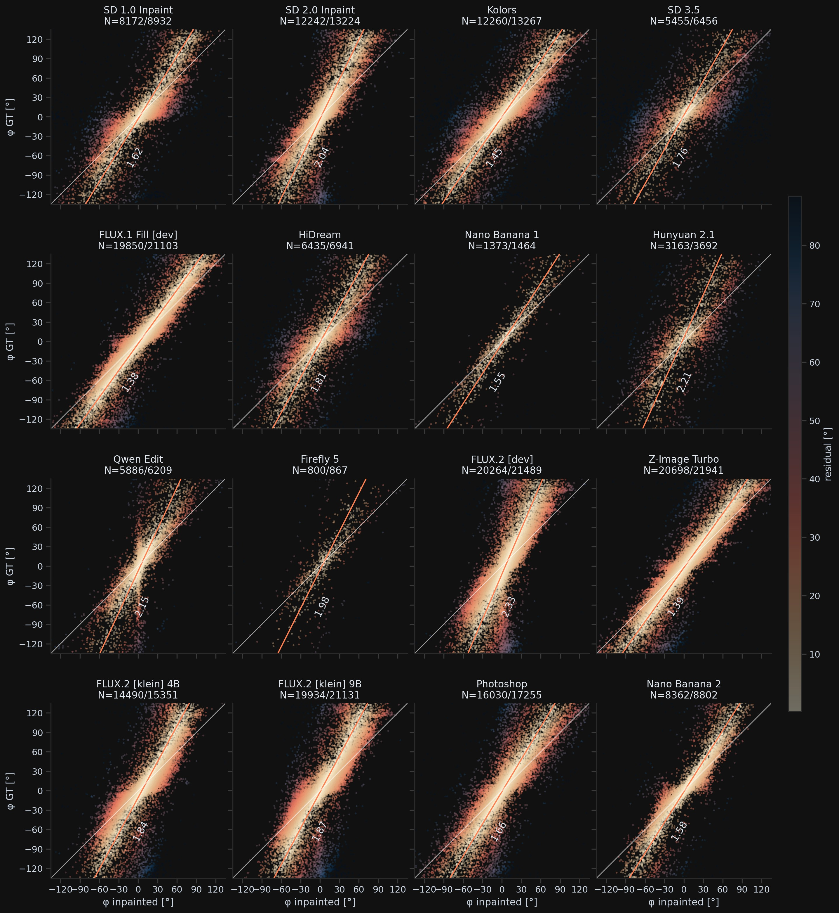
Elevation
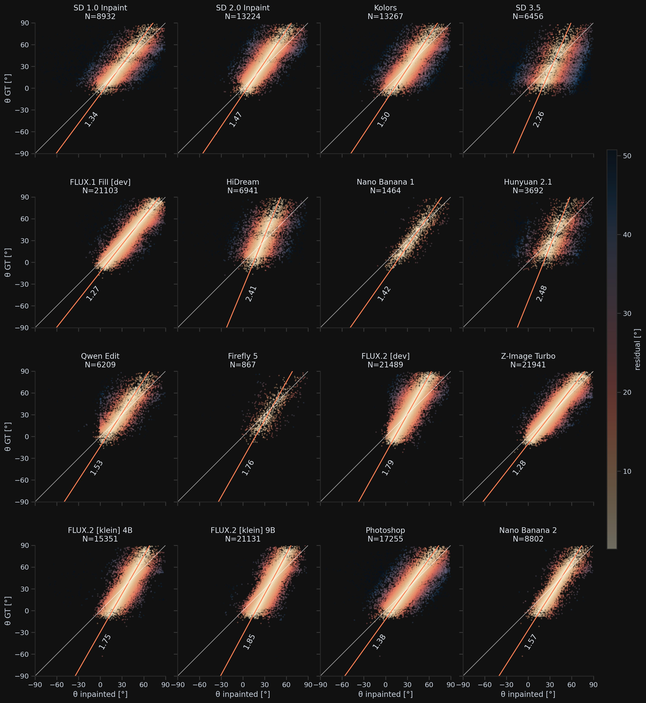
Colour accuracy analysis. ΔEab colour difference between ground-truth and inpainted probes, computed in the chroma (a*, b*) channels of Lab space to mitigate albedo/intensity ambiguity.
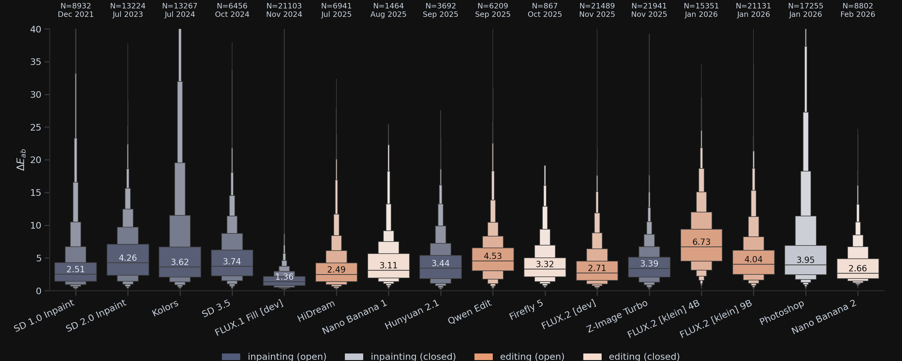
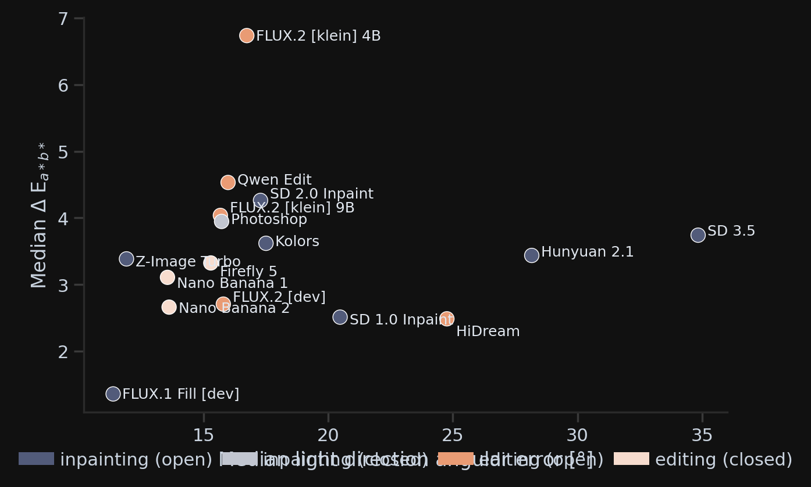
Survivorship bias does not favour weaker models. Models with lower probe survival rates also tend to produce higher angular error among their surviving probes. The bias works against these models.
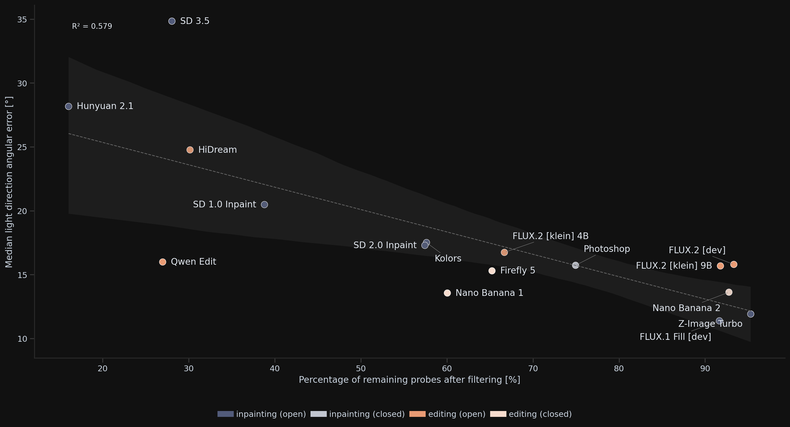
Models reproduce spatially varying illumination. The plot shows Δ(Inp) − Δ(GT): the difference between inpainted and ground-truth spatial variation. Values near zero mean the model faithfully reproduces the scene’s spatial lighting gradient; positive means it over-varies, negative means it under-varies.
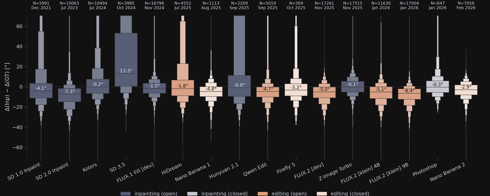
Radiance distribution similarity corroborates our main results. The models with the most accurate light direction and colour estimates also have the lowest distributional divergence.
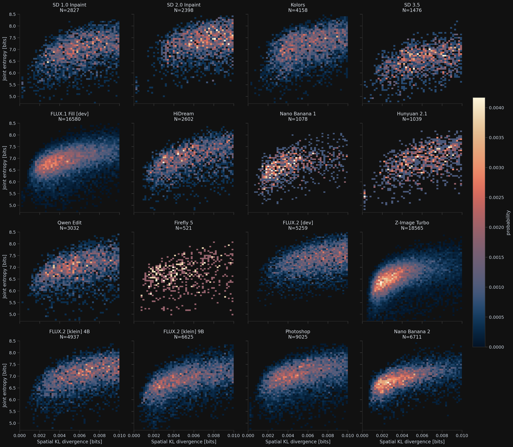
Method
Pipeline Overview
Given an image containing real light probes, we mask the probes and prompt a generative model to inpaint diffuse grey spheres. The generated probes are detected, cropped, and their lighting parameters estimated through inverse rendering. We compare against the ground truth across three measures: angular error in light direction, ΔEab colour error, and KL divergence of radiance distributions.
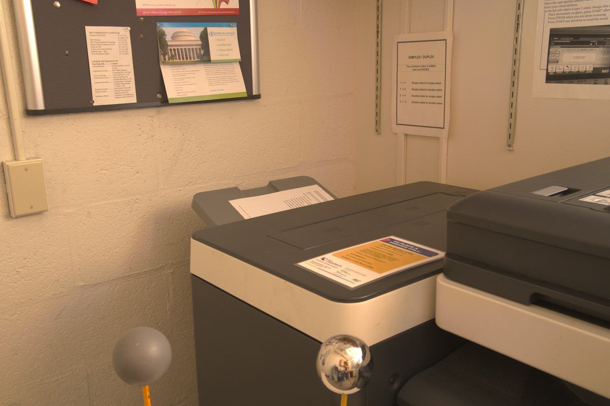
1. Original
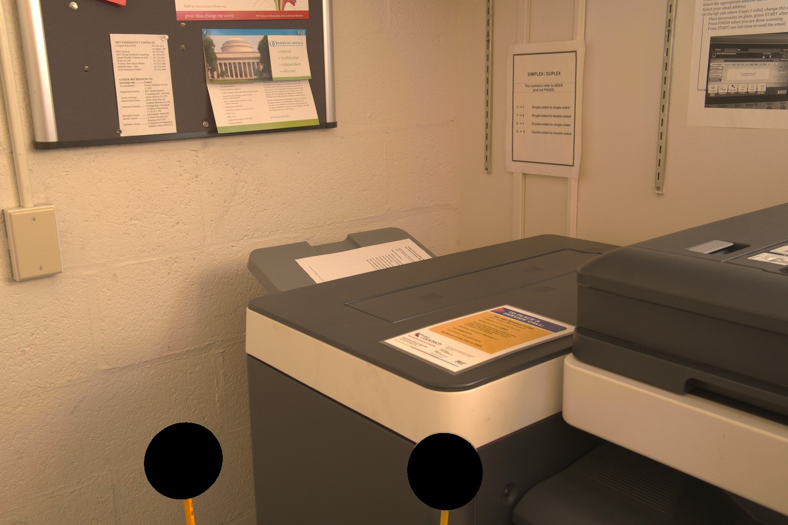
2. Mask
3. Inpaint
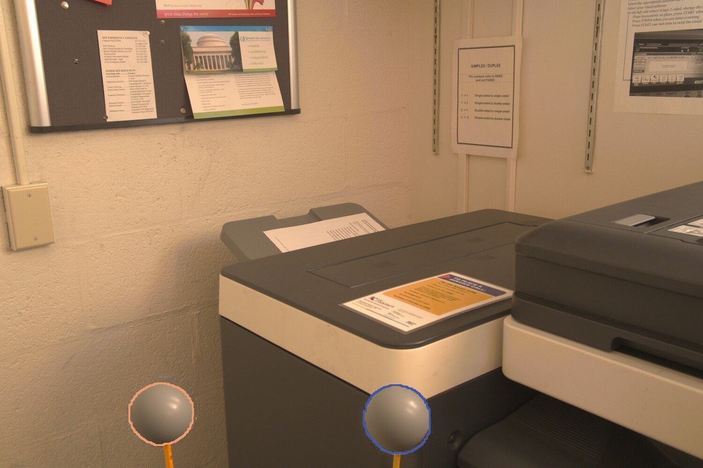
4. Detect
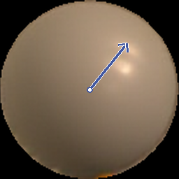
5. Estimate
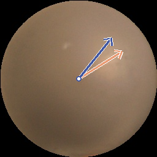
6. Compare
Explore Results
Select a scene, then click any model to inspect its generated probe and estimated light direction against the ground truth.
GT light directionEstimated light directionInpainting modelEditing model
angular error
Qualitative Examples
Generated vs. Ground-Truth Images
Drag the slider to compare ground-truth (left) and generated (right) images. Below each pair, the probes show ground-truth (orange border) and generated (blue border) light probes with estimated light directions.
Ground-truth probe
Generated probe
Citation
BibTeX
If you find our work useful, please consider citing:
@article{giroux2026shedding,
title = {Shedding Light: A Benchmark for Evaluating Lighting
Understanding in Generative Image Models},
author = {Giroux, Justine and Hilliard, Jack Oliver and
Hold-Geoffroy, Yannick and Vazquez-Corral, Javier
and Lalonde, Jean-Fran{\c{c}}ois},
journal = {ACM Transactions on Graphics (TOG)},
volume = {45},
number = {6},
articleno = {227},
numpages = {25},
year = {2026},
month = dec,
doi = {10.1145/3842579},
}
This research was supported by NSERC grant RGPIN 2020-04799 and an NSERC PhD scholarship to JG. JVC was supported by Grants PID2024-162555OB-I00, AIA2025-163919-C52 funded by MCIN/AEI/10.13039/501100011033 and by ERDF “A way of making Europe”, the Generalitat de Catalunya CERCA Program, and the 2025 Leonardo Grant for Scientific Research and Cultural Creation from the BBVA Foundation. The BBVA Foundation accepts no responsibility for the opinions, statements and contents included in the project and/or the results thereof, which are entirely the responsibility of the authors. Compute support was provided by Digital Research Alliance of Canada (RRG 5299).